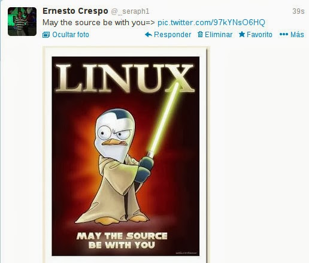
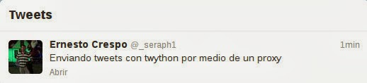

Probando la librería twython para twitter
Posted on dom 22 septiembre 2013 in Tutorial Python • 4 min read
Retomando los artículos sobre librerías de python para acceder a twitter, en el último artículo explique como descubrir trending topic con la librería python-twitter, ahora le toca el turno a twython. La página del proyecto se encuentra en github.
Twython soporta lo siguiente:
- Busqueda para:
- Información de usuario.
- Lista de twitter.
- Líneas de tiempo (timeline).
- Mensajes directos (DM).
- Cualquier cosa que se encuentre en la documentación del API de twitter.
- Actualización de imagen:
- Actualización de un estatus de un usuario con una imagen.
- Cambiar el avatar de un usuario.
- Cambiar imagen de fondo.
- Cambiar banner.
- Soporte de sólo lectura para OAuth2
- Soporte para el API de stream de twitter.
- Soporte para Python 3.
Para más información sobre la documentación la pueden visitar en el siguiente enlace. Para manejar la autenticación de la aplicación y del código pueden revisar el artículo de Efrain Valles, jugando con las APis de twitter y python .
Para instalar twython se usa pip o easy_install como root desde la línea de comandos:
root@grievous:~# pip install twython
Lo primero que se va a hacer es envíar un tweet con una imagen y luego sólo texto, la implementación usa un proxy para enviar los tweets, luego se muestra en pantalla el timeline del usuario y por último el resultado de la busqueda de la palabra python.
El código de la aplicación se muestra a continuación:
#!/usr/bin/env python
# -*- coding: utf-8 -*-
#Se define el token de la aplicacion
CONSUMER_KEY = 'xxxxx'
CONSUMER_SECRET = 'xxxxx'
#Se define el acceso al usuario
ACCESS_KEY = 'xxxxx'
ACCESS_SECRET = 'xxxxx'
#Se importa twython y de time a sleep
from twython import Twython
from time import sleep
#Se define los argumentos del cliente, la ip y puerto del proxy, el tiempo de intento de la conexion y el nombre de la
#aplicacion cliente
client_args = {'headers': {'User-Agent': 'cmdtweetpy'},'proxies': {'http': '127.0.0.1:xxxx'},'timeout': 300}
#Conectar a twitter y enviar un tweet,
#Si no se logra la conexion se devuelve un mensaje.
try:
api = Twython(CONSUMER_KEY,CONSUMER_SECRET,ACCESS_KEY,ACCESS_SECRET,client_args = client_args)
photo = open('linux.jpg','rb')
api.update_status_with_media(media=photo, status='May the source be with you=> ')
api.update_status(status="Enviando tweets con twython por medio de un proxy")
print("Tweet enviado con exito")
except twython.exceptions.TwythonAuthError:
print(u"Error de autenticación, no se pudo envíar el tweet")
#Listar el timeline del usuario
listado = api.get_home_timeline()
print("Timeline del usuario _seraph1")
print("-----------------------------")
for i in listado:
print i[u'text']
sleep(1)
print("-----------------------------")
#Se realiza una busqueda de la palabra python con tipo de resultado popular
resultados = api.search(q='python',result_type='popular')
#resultados = api.search(q='python')
#
datos= resultados.keys()
print("Elementos del diccionario: %s" %datos)
print("Resultado de la busqueda: python")
print("--------------------------------")
for i in range(len(resultados[datos[1]])):
print resultados[datos[1]][i][u'text']
print "***********************************"
print("--------------------------------")
A continuación se muestra la salida de la aplicación:
Tweet enviado con exito
Timeline del usuario _seraph1
-----------------------------
Bo Xilai Gets Life Sentence http://t.co/oWBTgTBJKv
(Starting with "A") Armstrong, Aslan, Atran: Who will be the first to say this has nothing to do with religion?
http://t.co/8IacERuHN7
All About Team Building & #Leadership Exercises at Work! http://t.co/SEI89zGp8P #managers
#linux #netdev Re: [Xen-devel] [PATCH net-next] xen-netfront: convert to GRO API and advertise this feature http://t.co/3nWDlbv7pT
#linux #netdev [PATCH net 3/5] bnx2x: 57840 non-external loopback test fail on 1G http://t.co/tI6azgkcBZ
"Read the collective bargaining agreement, we can do that" RT @BradStone: ESPN reports #Browns now fielding offers for their fans' souls.
“@SoftwareHollis: @CloudExpo - can't wait for November. Looking forward to presenting! http://t.co/b3dc2a08KU #Cloud #SocialMedia #SaaS”
.@jeancase - this is really about the democratization of ideas - the smartest people in the room probably don't work for you #2030NOW
Achieving Accountability With Talk of Infidelity - via @toddbnielsen http://t.co/hZktGZZ3EK #leadership
RT @les_leopold: Solution to the Student Debt Crisis: No More Debt
http://t.co/hsvdZj9uJQ
Recuerda cerrar sesión cuando entres a #Clavenet desde cualquier equipo. #TipdeSeguridad
-----------------------------
Elementos del diccionario: [u'search_metadata', u'statuses']
Resultado de la busqueda: python
--------------------------------
"Well, everday's a workout when you gotta carry around a 20 pound python in your jeans." -Will Forte 'MacGruber' 2010
***********************************
Aprende Python desde cero [Guía completa] http://t.co/ZZE2NXEOVG #YoComparto
***********************************
「d3はシングルスレッドなのでHadoopからデータ直接流し込んで大規模処理するわけにはいかないから、サーバ側でPythonとか走らせ、集計やサンプリング済みデータをJSに渡して可視化してる」的なこと言ったら「フリーソフトでは大規模なデータマイニングは難しい」っていう纏め方された
***********************************
Please RT! The most significant fact about today's Raspberry Jam for kids at PyconUK is the gender split: 50/50. #python #progress
***********************************
先方、データマイニングについての記事のインタビューなのにPythonとか全く知らない（名前すらしらない）ようで、RやPython、果てはd3.jsとか全部ひっくるめて「フリーソフトを利用して分析している」っていうすごいざっくりしたまとめられ方してて、前後の話に矛盾が出てる
***********************************
Obviously Monty Python was never shown on JA TV as the Reggae Charts out there have Silly Walks Record label listed as err..'Silky Walks".
***********************************
Air Jordan IV “Black Python” Customs. WIN or BIN? #CurtienFashion http://t.co/SHu9MKOOB5
***********************************
Defenders of Obamacare dismissing "glitches" increasingly sound like the Black Knight from Monty Python http://t.co/SGV8ys8hMF
***********************************
Without this Beatle, Monty Python's "Life of Brian" would never have been made http://t.co/85ys7bLo6S #5facts
***********************************
Indonesia adalah Tempat ditemukannya ular terpanjang di dunia yaitu, Python Reticulates sepanjang 10 meter di Sulawesi. #7d
***********************************
Recruiter: "I came across your resume in a Google search. You seem to have an awesome expertise on python" To Guido. https://t.co/lAbeQVgo1I
***********************************
Mozilla Webdev is looking for a Web Engineer - Python, Django, jQuery, OSS - http://t.co/9hg8GFOeSl
***********************************
Writing a High Performance Python book: I'm terribly excited to announce that I'm co-authoring an O'Reilly... http://t.co/ZctbSoZGqa
***********************************
If you can write PHP, you can write C/C++/Java/Python/Ruby/whatever. These language aren't all that different.
***********************************
'El sentido de la vida' cumple 30 años: 12 cosas que probablemente no sabías de la peli de los Monty Python http://t.co/hBVKUCIMFJ
***********************************
--------------------------------
A continuación se muestran dos imágenes de los tweets enviados:


¡Haz tu donativo! Si te gustó el artículo puedes realizar un donativo con Bitcoin (BTC) usando la billetera digital de tu preferencia a la siguiente dirección: 17MtNybhdkA9GV3UNS6BTwPcuhjXoPrSzV
O Escaneando el código QR desde la billetera: